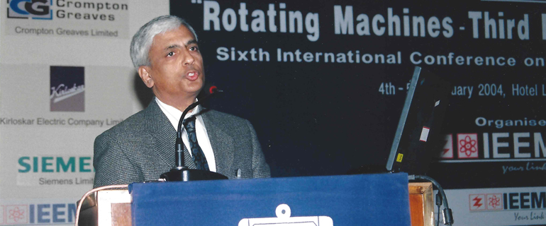

About US

Brij Aggarwal is a registered professional engineer with over 30 years of broadly based expertise and experience in product safety, integrity and quality. His experience includes Regulatory Approvals (domestic and international), Product Safety, Energy Efficiency, EMC/EMI, Telecom requirements, environmental requirements (i.e. RoHS and WEEE) and Quality Management Systems (ISO9000 and IEC/ISO17025). He has worked on a wide variety of products, including industrial and process control, switchgear, motor controls, commercial and household appliances, tools, consumer electronics, safety controls and Alternative Energy products and systems.
He worked for CSA as the Senior Certification Engineer for consumer electronics, technical advisor for household and commercial appliances and tools and technical specialists in alternative energy products. Brij has participated on a number of standards developments committees for product safetyand EMC for organizations such as Standards Council of Canada (SCC), Canadian Standards Association (CSA), International Electro-technical commission (IEC). He is now a sitting member of working groups WG2 (photovoltaic Modules) and WG7 (Concentrators) for IEC TC82 and working group WG4 (Conductive Charging systems for Electric Vehicles) of IEC TC 69.
Brij has worked with customers in all regions of the globe, including Canada, United States, European Union. Japan, China and India.